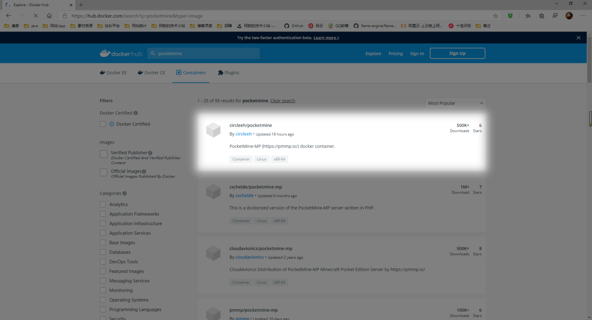
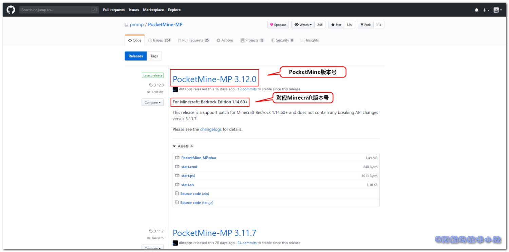
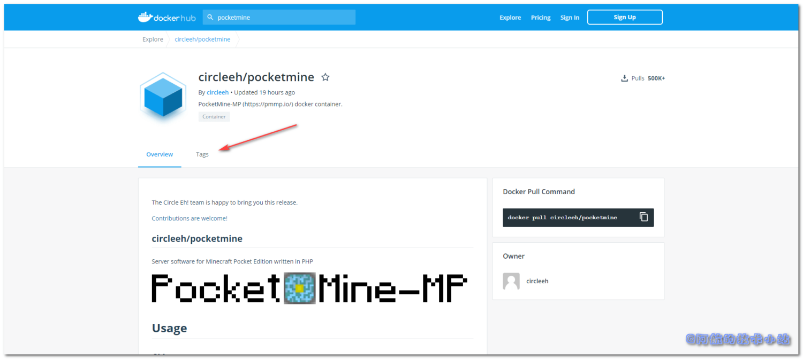
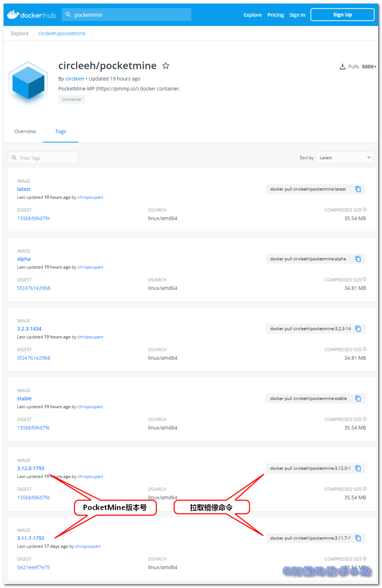

国内的某易代理简直是太好(la)用(ji)了. 这不最近想重拾一下青春.. 下载, 并打开国服 我的世界 Minecraft , 好家伙, 占了1g多的手机存储, 材质光影资源短缺, 界面卡到爆😓
回头一看官方版, 包大小只有98m.. 作为一个7年的MC老玩家简直不能忍! 回想起很久之前自己开服, 现在又掌握了Docker容器技术, 尝试一下自己开服.
需具备的条件
本篇教程针对于以下人群:
- 愿意为Minecraft而折腾的人.
- 了解Docker基本用法, 如果你对Docker还不太熟悉, 可以阅读Docker官方文档 、Docker菜鸟教程 等.
- 拥有自己的云服务器(阿里云等).
- 了解常见终端语法.
使用PocketMine
在Docker Hub
中搜索关键字: pocketmine, 可以看到有好多相关镜像.
在选型中, 我们一般会选用活跃度高一些的镜像. 也就是"没凉"的镜像. 长时间不维护的镜像可能出现无法快速解决的Bug等!
途中最新的镜像距文章编写时间只有18个小时, 已经非常活跃了, 所以选用这个!

点击, 进入circleeh/pocketmine详情页 .
拉取镜像
选取版本
这里一定要注意选择合适的版本, 若版本不兼容则会无法加入至服务器, 先来看一下自己的Minecraft版本号, 再去这个Github网址 对照自己的版本!
打开官方Github Release网址 , 可以看到:

如你所见, 大标题后面的是PocketMine版本号, 下面的副标题是对应的Minecraft版本号.
回到circleeh/pocketmine详情页 , 点击Tags:

看到这个页面:

如图所示, Image标签包含版本号, 后面对应了其拉取镜像的命令.
拉取镜像
确认版本号后, 进行拉取. 本文以3.11.7-1792版本为例, 在终端中输入:
docker pull circleeh/pocketmine:3.11.7-1792
等待拉取完毕.
启动容器
接下来就是启动容器了, 先来看一下命令(下方有对应的说明):
docker run --name=pocketmine \
-v /usr/local/PocketMine-Docker/config:/config \
-e PGID=0 -e PUID=0 \
-e TZ=Asia/Shanghai \
-p 19132:19132 \
-p 19132:19132/udp \
-p 25575:25575 \
circleeh/pocketmine:3.11.7-1792
| 命令 | 解释 |
|---|---|
| --name=pocketmine | 为容器起名 |
| -v /usr/local/PocketMine-Docker/config:/config | 将配置文件映射至宿主机(也就是你运行docker的主机) |
| -e PGID=0 -e PUID=0 | 在终端中输入id <运行docker的用户>, 比如你使用root运行的docker, 那么就输入id root. 终端会展示你的PGID以及PUID |
| -e TZ=Asia/Shanghai \ | 时区, 中国一般选Asia/Shanghai. 若你在其他地区就改为你的所在地! |
| -p 19132:19132 \ | |
| -p 19132:19132/udp \ | |
| -p 25575:25575 \ | 映射端口, Minecraft通常为19132, 下面的udp映射也不要落下! |
| circleeh/pocketmine:3.11.7-1792 | 我们所使用的镜像名 |
修改为自己的配置后, 启动.
开启云服务器外部端口
别急, 还没完呢! 你还需要去云服务器开启你的端口! 这里以阿里云为例:
开启两个端口:
1. UDP 19132/19132 (也就是你docker开启映射的端口)
2. TCP 19132/19132 (同上)

关闭白名单
因为容器默认开启了白名单限制, 不在白名单内的IP将会被禁止进入. 所以我们来进入上面的配置映射目录/usr/local/PocketMine-Docker/config(如果你和文章不一致则修改为你自己设置的):
cd /usr/local/PocketMine-Docker/config
输入命令, 修改服务参数:
vim etc/server.properties
找到:
white-list=on
改为:
white-list=off
重启容器.
开始游戏
如果上述操作没有问题, 就可以打开我的世界, 输入云服务器IP及端口, 开始愉快的游戏了!
更多的服务器参数
因为服务器可以控制的参数过多且PocketMine更新过快, 所以请大家访问官方配置文档 以进行额外的配置!
感谢
- PocketMine官方
- Docker上circleeh 的pocketmine镜像
- Pexels 上的 bongkarn thanyakij 拍摄的照片